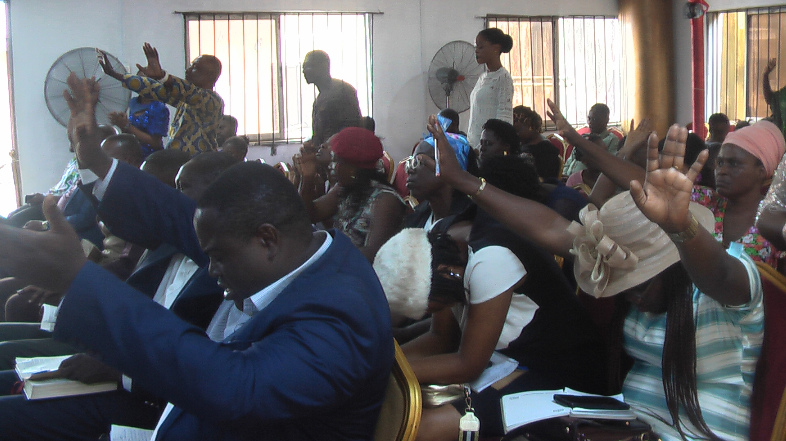
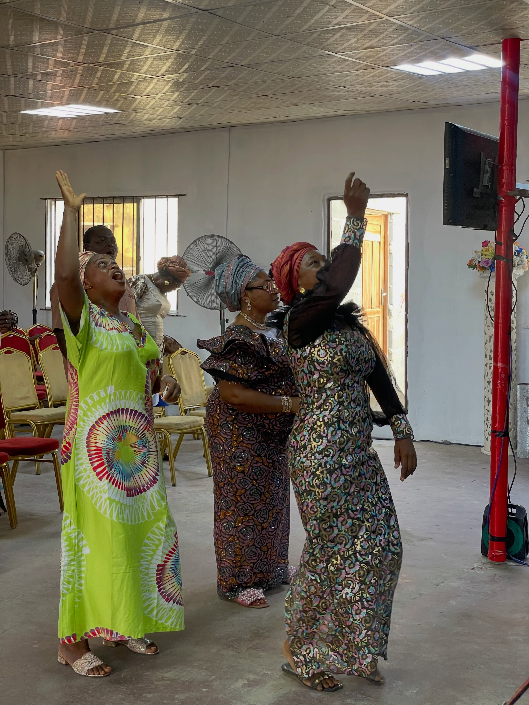
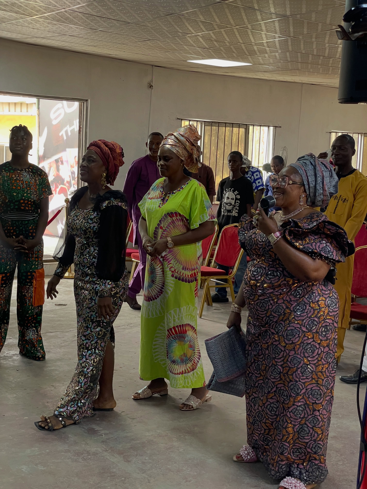
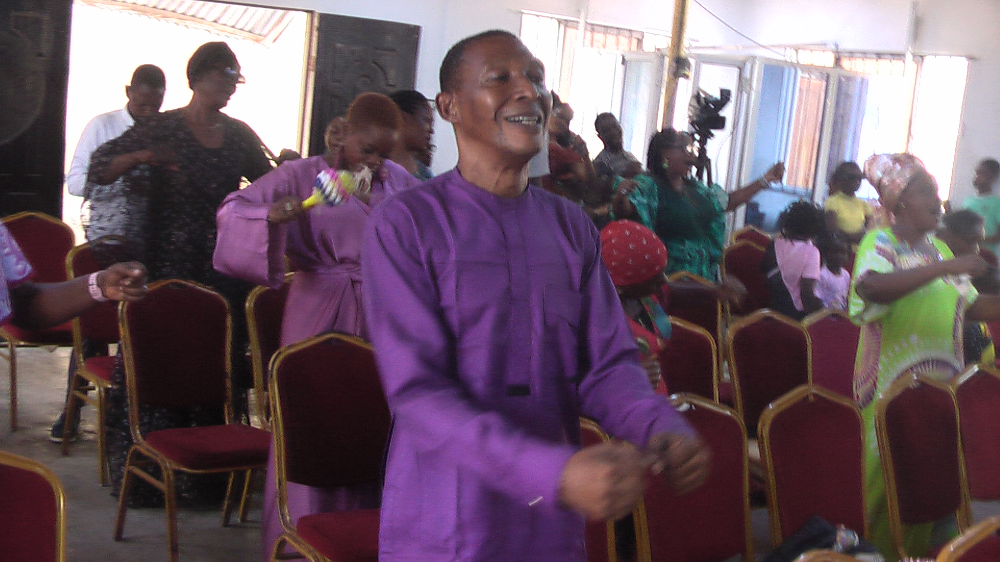
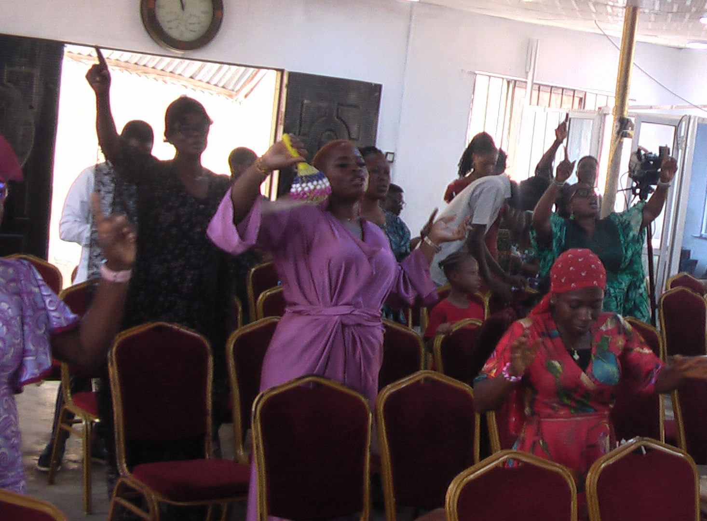
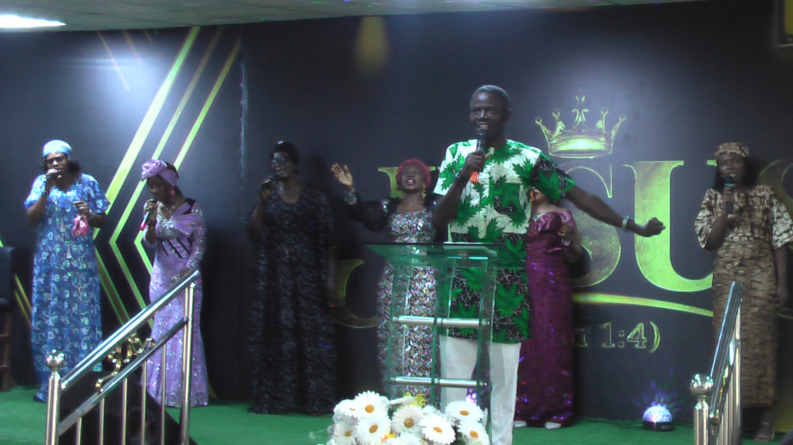
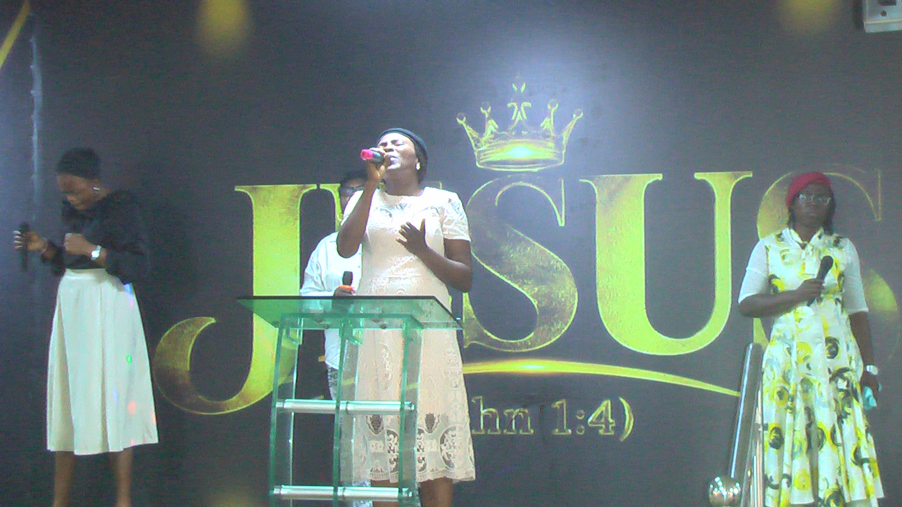

✦
Worship & Prayer
Come together in worship, prayer and thanksgiving as we seek God and strengthen our faith.
We welcome you to worship with us this Sunday. Come as you are and experience a church family committed to faith, prayer, God's Word and love.
A church family growing together in the knowledge and love of Jesus Christ.
At T.H.I.S Latter House, we gather to worship God, learn from Scripture, pray together and encourage one another to live out our faith every day.
Discover Our Church
Our church familyJOHN 4:3
A glimpse into the life of our church family.





Come together in worship, prayer and thanksgiving as we seek God and strengthen our faith.
Grow in your understanding of Scripture and put the Word of God into practice.
Build meaningful relationships and find encouragement in a welcoming church family.
Support the work of the ministry and help us serve our community.
Online Giving